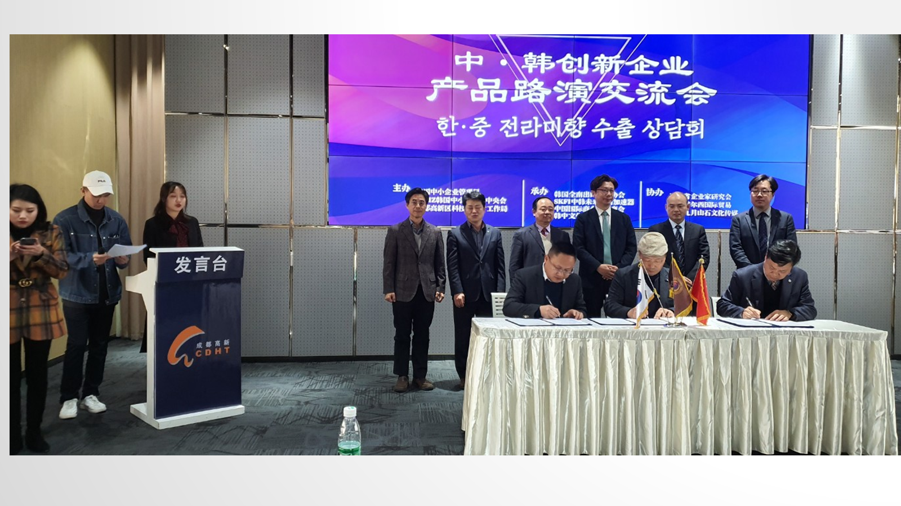
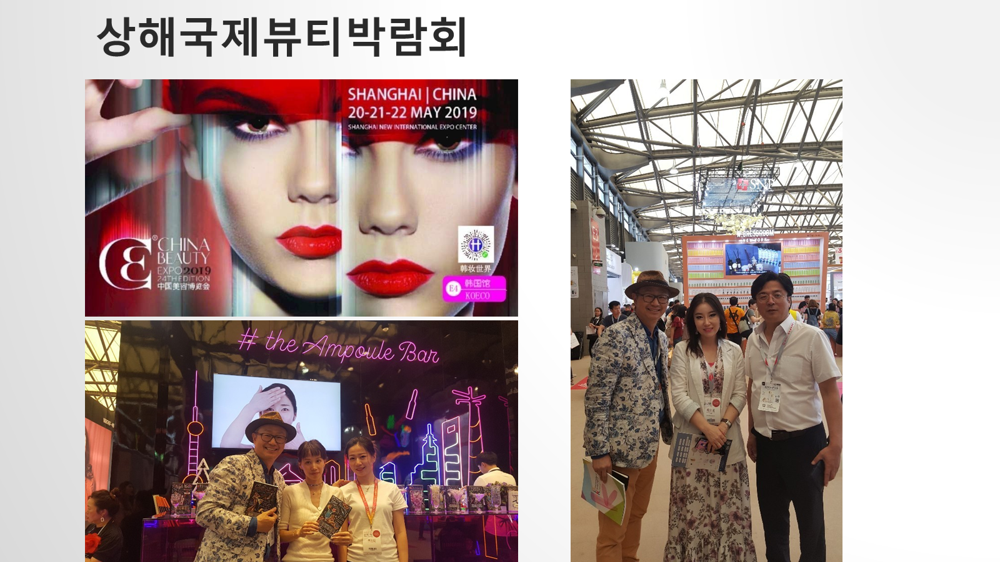
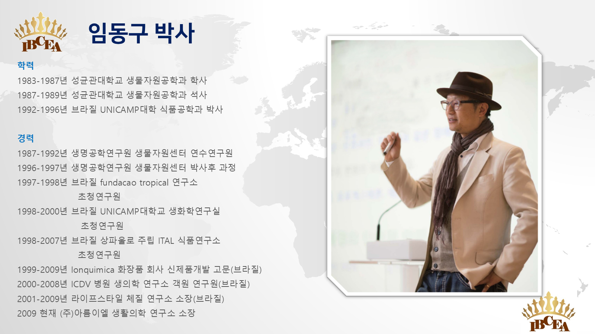
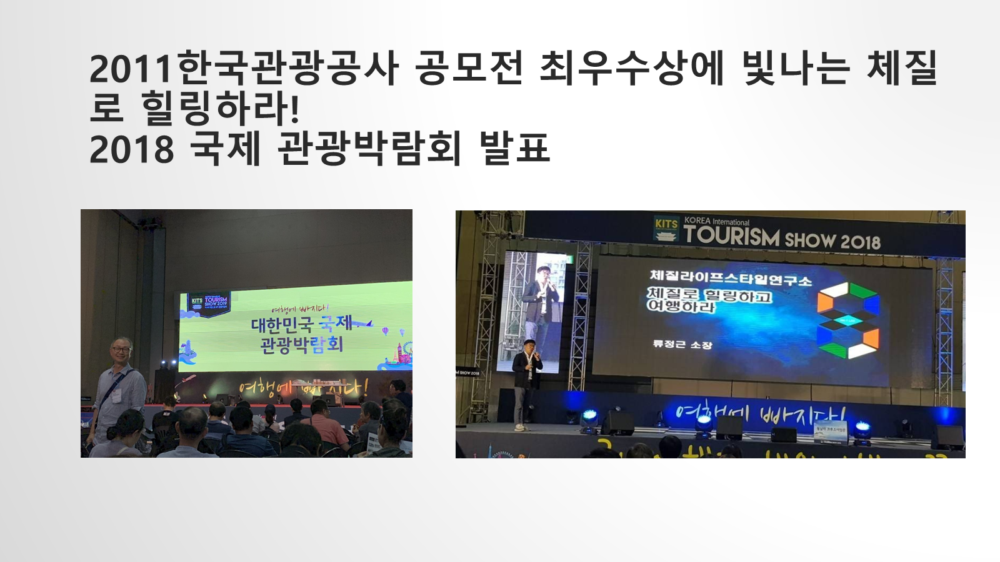

연구와 생활체질 네트워크
UNICAMP 박사과정 이후 열대연구소·ITAL·의료기관·화장품 기업과 연구·자문을 이어가며 체질과 생활을 연결하는 기반을 축적했습니다.
원형자료KB-02956 · 슬라이드 47 →
일본의 생활문화 강의, 브라질의 연구와 뷰티 산업, 중국의 박람회와 수출상담, 튀르키예의 체질화장품까지. 사상체질은 강의·연구·제품·경험의 언어로 여러 문화권과 접점을 넓혀 왔습니다.
브라질에서 축적한 연구 기반은 일본의 생활문화 강의, 남미의 뷰티 발표, 중국의 전시·수출상담으로 이어졌습니다. 서로 다른 산업과 문화권에서 사상체질이 어떤 모습으로 번역되었는지 시간순으로 살펴봅니다.
UNICAMP 박사과정 이후 열대연구소·ITAL·의료기관·화장품 기업과 연구·자문을 이어가며 체질과 생활을 연결하는 기반을 축적했습니다.
원형자료도쿄 한국문화원에서 ‘사상체질이란 무엇인가’와 건강한 생활의 지혜를 주제로 두 차례 강의가 열렸습니다.
공공 기록브라질 시장개척 포럼과 현지 발표 이력은 체질 라이프스타일을 남미의 뷰티·웰니스 문맥으로 번역한 초기 접점을 보여 줍니다.
활동 기록상파울루 Estétika 발표자료에는 피부유전자와 사상체질을 연결한 관리 구상과 포르투갈어 발표 내용이 남아 있습니다.
발표자료제품 제안 자료에 말레이시아 페낭 뷰티박람회 참가 이력이 기록되어 있어 아시아 뷰티 시장과의 연결 자산으로 분류했습니다.
제품자료국제관광박람회 무대에서 체질라이프스타일연구소의 ‘체질로 힐링하고 여행하라’ 프로그램을 발표했습니다.
현장 기록상하이 국제뷰티박람회 현장 사진은 체질·뷰티 콘텐츠가 해외 산업 현장과 만난 장면을 보여 줍니다.
현장 기록한중 전라미향 수출상담회 현장과 체질맞춤 라이프스타일 코칭에 대한 반응이 기록되어 있습니다. 사천성 박람회와 청두 특강은 당시 후속 계획으로 제시됐습니다.
활동·확장활동 기록은 로컬 원형자료와 공개 기록을 바탕으로 분기별 갱신됩니다.
설명만으로는 보이지 않는 사람, 무대, 산업 현장을 당시 발표자료에서 그대로 꺼냈습니다.




중국어 Lifestyle 9와 카자흐스탄 영문 발표자료를 현지화 자산으로 삼고, 튀르키예는 제품·파트너 운영을, 몽골은 건강·힐링 관광과 체질교육을 연결한 초청형 프로그램을 발전시키고 있습니다.
음식·화장품·피부관리·아로마·패션·진로·스파로 이어지는 Lifestyle 9 중국어판 원고가 개발되어 현지 교육과 웰니스 프로그램의 언어 자산으로 활용할 수 있습니다.
콘텐츠 자산연구소 소개자료와 인터뷰에 남은 수출·현지 반응을 바탕으로 제품 설명과 파트너 운영 모델을 구체화하고 있습니다.
진행 중‘체질을 알면 사람과 건강이 보인다’를 중심으로 유전자·자기이해·생활 선택을 연결한 영문 발표자료가 개발되어 중앙아시아 교육 현지화의 기반이 되고 있습니다.
발표자료칭기스칸공항–부산 왕복, 건강상담·생활교육·템플스테이·온천스파·한국문화 체험을 묶은 7박 8일 원형 운영안이 남아 있습니다. 이 자산을 체질교육 모듈과 연결해 현지 초청형 프로그램으로 다듬고 있습니다.
진행 중
90분 비의료 입문 클래스. 한국 원형, 자기관찰, 생활 선택, 회고를 한 세션에 담습니다.
푸드·향·뷰티·패션 가운데 현지에 맞는 세 모듈을 조합하는 1일 체험형 상품입니다.
숙박·식사·움직임·스파·상담을 연결하고 전후 만족·행동·안전을 추적하는 리트리트입니다.
시장별 진입, IP 아키텍처, 고객 여정, 인증·라이선스와 실행 지표를 별도 계획서로 정리했습니다.
사상체질은 기업의 건강교육에서 식탁·진로·공연·뷰티로 확장됐고, 유정근의 아로마테라피는 감정 관찰과 일상 회복의 프로그램으로 이어졌습니다. 공공기관과 언론에 남은 기록이 두 흐름의 실제 접점을 보여줍니다.
도쿄에서 ‘사상체질’을 주제로 열린 이틀간의 건강세미나와 현장 사진이 공식 기록으로 남아 있습니다.
주일한국문화원 →삼성전자 기흥캠퍼스 임직원 특강에서 임동구 박사가 체질별 생활관리와 현장 체질분석을 진행한 내용입니다.
삼성전자 반도체 뉴스룸 →법원 가족과 시민을 대상으로 체질 라이프코칭과 생활건강을 소개한 강연 기록입니다.
광주고등법원 →브라질 연구, 사상체질의 생활 적용, 체질오페라와 제천한방바이오박람회 활동을 함께 다룬 임동구 박사 인터뷰입니다.
오마이뉴스 →음식·운동·피부·화장품·공연예술로 이어지는 임동구 박사의 응용 구상과 글로벌 활동을 소개합니다.
Cook&Chef →브라질 연구 경험과 체질·유전자·생활문화 활동을 50플러스 개인화 관점에서 정리한 인터뷰입니다.
서울시50플러스 →오페라 등장인물의 정서와 관계를 사상체질로 읽는 공연형 프로그램의 배경과 구성을 소개합니다.
엠디저널 →한국강사신문이 유정근을 아로마테라피 분야 명강사로 소개하며 체질 건강·진로·뷰티·체질오페라 교육 활동을 함께 기록했습니다.
한국강사신문 →유정근이 향으로 현재 감정을 관찰하고 스트레스 회복 방법을 찾도록 구성한 힐링페스타 프로그램과 활동 이력입니다.
힐링산업협회 →한국강사교육진흥원이 유정근 소장을 초빙해 진행한 아로마테라피 특강의 공개 기록입니다.
한국강사교육진흥원 →공동연구, 원형자료 요청, 강의·교육, 제품·프로그램 공동개발과 국내외 파트너십을 제안해 주세요.